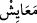

Ne kadar da az şükrediyorsunuz!
“Doğrusu biz sizi yeryüzüne yerleştirdik.” Size orada bir mekan, yerleşecek bir yer,
dilediğiniz şekilde tasarruf etme gücü verdik.
“Orada size geçimlikler verdik.” Sizin iyilik ve faydanız için hayatınızı
sürdürebileceğiniz sebepler yarattık.
“
” (geçimlikler), “
” kelimesinin çoğuludur. Hayatın devamı için gerekli
olan yiyecek, içecek ve diğer ihtiyaçlar mânâsına gelir.
Burada hitap Kureyş halkınadır. Çünkü Allah Teâlâ onları, Araplar içinde üstün
kılmış, yazın Şam’a ve kışın Yemen’e ticaret kervanları ile seyahat etmeye muktedir
kılmıştır. Onlar bu seyahatlerini Allah’ın Haremi’nin sakinleri ve Beyt’inin komşuları
olarak güvenlik içinde yaparlardı. Ticaret için uğradıkları yerlerde, insanlar onların
getirdikleri malları kapışırlardı. Mekke halkı bu iki yöreye yaptıkları ticarî seferlerde
büyük gelir elde ederler, bunlarla geçinirlerdi. Gittikleri bu yerlerden yeme, içme,
giyim ve sair ihtiyaçlarını temin ederlerdi.
“Ne kadar da az şükrediyorsunuz!” Allah’ın size lutfettiği bunca nimete rağmen ne
kadar da az şükrediyorsunuz!
Ayetteki “Temkîn (yerleştirme)”, geniş mânâlı bir lafızdır. Temlik etmek, yetkili
kılmak, dünyevi ve uhrevi her türlü faydalı neticeyi elde etmek için gerekli gücü vermek
anlamındadır. Ayrıca “temkîn”, ma‘rifet, muhabbet, Hakk’ı taleb, seyr ilallah, Hakk’a
ermek ve vuslat isti‘dâdı vermek anlamını da ifâde eder
Bu “temkin” şerefi sadece insana verilmiştir. Onunla üstün ve fazilet sahibi
kılınmıştır. Yeryüzünde Allah’ın halifesi olması da bu “temkin” ile tamam olur.
Bu sebeble meleklere Âdem (a.s.)’a secde etmeleri emredilmiştir. Allah Teâlâ bu
“temkin”i Âdem (a.s.)’ın evlatlarına da bahşederek şöyle buyurmuştur:
“Doğrusu biz sizi yeryüzüne yerleştirdik.” Yani, sizi orada gezip dolaşmaya muktedir
kıldık. Size yeryüzünde Allah’ın halifesi olma şerefini verdik. Sizden başka ne yerde
hayvanlara, ne de gökte meleklere bu imkânı vermedik.
“Ve orada” özellikle “size geçimlikler verdik.” Yani melekler, hayvanlar ve
şeytanlar (cinler) için geçimlikler yarattık.
Ayete şöyle mânâ vermek de mümkündür. “Sizin için orada geçimlikler verdik.”
Çünkü insan melekliği, hayvanlığı, şeytanlığı ve insanlığı kendisinde toplar. Meleğin
geçimi ruhunun, hayvanın geçimi bedeninin, şeytanın geçimi sürekli kötülüğü emreden
nefsinin geçimidir. İşte insan için bu terkib ile insanlık mertebeleri meydana geldiğine
göre bu geçimlik yalnız melek, hayvan veya şeytandan birine has değildir. İnsanlık
mertebeleri kalb, sır ve hafîdir. Kalbin geçimi, müşâhededir. Sırrın geçimi, keşflerdir.
Hafînin geçimi ise Hakk’a ermek ve vuslattır.
“Ne kadar da az şükrediyorsunuz!” Bahşedilen bu nimetlere sizden pek az kimse
şükreder. Bu ise yeryüzünde yerleştirme ve orada geçimlikler verme nimetlerini